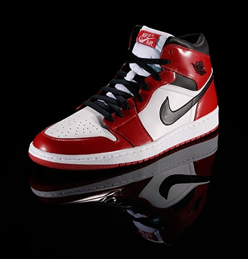
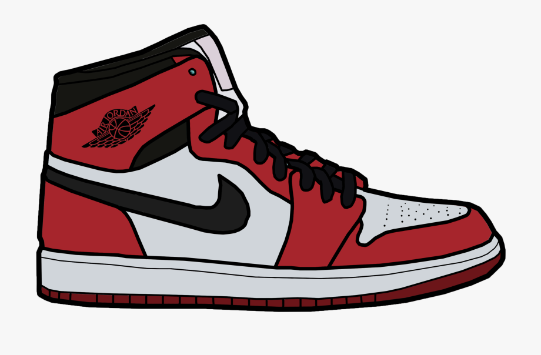
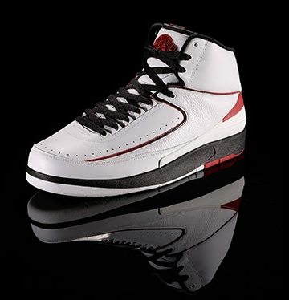
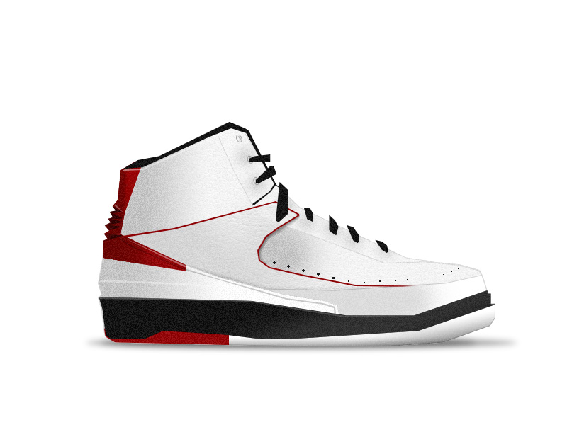

Air Jordan I
Designer: Peter Moore
Released: 1985
Original Price: $65

This Air Jordan was the only one in the series to feature the familiar Nike
Swoosh logo. And predating the Jumpman logo, the OG shoe featured the Wings
logo - a basketball with wings stretching from both sides
and "Air Jordan" printed above the ball.

Air Jordan 2
Designer: Peter Moore
Released: 1985
Original Price: $65

Modern sneaker culture had its roots in the air; that is, the original Air Jordan
that released in 1985. Nike, and subsequently the Jordan Brand, has honored this
iconic silhouette numerous times since with releases of the Retro 1.